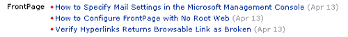

|
| ||
|
| ||
Robert Carter
MSDN Technical Writer
May 11, 1999
Note This is the third article in a series documenting how we built the new MSDN Online. The first article discussed the architecture of the site and gave an outline of the production process and tools we use to deliver our stories to you. The second article discussed how our ASP team created a Lookup-Table Object.
Contents
Introduction
The MSDN Start Cookie, Processing
Converting Cookie Strings to Usable Data
Assembling a Category's Headlines
Displaying Headlines On a Page
Summary
Personalization. It would be an over-hyped meme if not for the fact that occasionally Web sites really do implement personalization schemes that give useful feedback or data filtering, rather than just collecting information under the guise of delivering personal content ("Howdy Cowboy Robert! Based on your answers to our survey, we just know you'll love this new toothpaste!").
We feel the MSDN Online Developer Start Page delivers useful personalization. There are so many subjects that interest developers, and the Microsoft site dishes out so much information every day, that it's almost impossible for any but the most dedicated surfers to keep track of everything that's going on. Our new Start page addresses that problem. After developers have indicated their interests (by selecting checkboxes from the customization page), we dish up any new content related to those interests each time they return to the site. This is done using a combination of cookies and the LookupTable Object discussed in the last article of this series. We thought about storing the data in databases, but for performance reasons cookies are hard to beat. (For those itinerant computer nomads always sitting down at someone else's computer, we offer the ability to store their personalization settings on a database, which we'll tell you about later.)
This article will tell you how we create, process, and use cookies and the LookupTable object to deliver the information you see when you visit the Start Page. We'll:
To find out more about cookies and how they're created, check out Cookies 101.
Calling up cookies with the ASP Cookies collection is easy. If you know the name of the cookie's attribute, you can reference it directly.
varName = Request.Cookies("cookiename").Value
So much for the easy stuff. Once we assign the cookies to the variable, the fun really begins.
Let's step back and outline the whole point of this exercise: getting personalized article references to the client. Remember that visitors that have personalized their Start page selected both the categories and the interests they want delivered. The tasks before the personalization server, then, are to:
Of course, there are a few additional cookie and presentation tasks as well, but the bulk of the processing on the Start page is devoted to assembling the headlines for each category/interest combination. So that's where we'll focus.
We use two major VBScript subroutines to process the cookies. CookiesToGlobals uses ASP's Request. Cookies collection to assign the contents of our cookies to variables We then use the Split function to take the cookie string values and generate an array.
Sub CookiesToGlobals()
dim Cats
dim Ints
dim Provs
Cats = Request.Cookies("C")
Ints = Request.Cookies("I")
Provs = Request.Cookies("P")
If cats = "" Or cats = "x" Then
Else
aCategories = Split(Cats, ",")
End If
If Ints = "" Or Ints = "x" Then
Else
Interests = Request.Cookies("I")
End If
If Provs = "" Or Provs = "x" Then
Else
aMC = Split(Request.Cookies("P")("MC"), ",")
End If
End Sub
In CookiesToGlobals, we first declare our variables, and then assign the values of the Categories, Interests, and Providers cookies to Cats, Ints, and Provs, respectively.
Once we've built the arrays, we can start building the table which will house the main Start page output.
Assembling a Category's Headlines
Now that all our cookie data has been compiled into arrays, we can use those arrays to start accessing all the information stored in our LookupTable components. The Categories cookie drives the next section of code.
If IsArray(aCategories) Then
For Each CategoryKey In aCategories
CategoryValue = Categories.LookupValue(CategoryKey)
If CategoryValue <> "" Then
WriteSection CategoryKey, CategoryValue
End If
Next
End If
Essentially, we store a two-letter code for each category selected by the user on the Customization page. We store these codes in the order that the user requests. When it comes time to generate the personalized MSDN Start page, we loop through the these codes and use them to create and order each category.
The first destination in our loop is the Categories LookupTable object. We use the LookupValue method to grab the string holding the friendly name for each category (thus, "NE" becomes "Developer News"). Then we call the WriteSection function.
Figure 1. WriteSection function output
We pass the category key and friendly name for the category we're building to WriteSection. WriteSection generates the header that begins each section/category of the Start page. It then converts the key value to uppercase using the UCase function, and puts it into a <SPAN> tag that has its own CSS style. Downlevel browsers that don't support CSS still get some kind of formatting via the <FONT> tag. We create a tabbed appearance by abutting rounded gifs the same color as the background on either side of the text. WriteSection also accesses another LookupTable object--CatDesc--to pick up the descriptive text we want to display for that section.
Note that we show a mix of ASP code (the code between the <% and %> brackets) and code that may or may not be written to the client. Whether the code is written to the client depends on how the ASP server interprets its code. For example, the code below immediately following the Sub WriteSection() declaration will get written on the client every time WriteSection() is called. The code between the If CategoryKey <> "SE" Then and End if statements will only be written to the client if the expression evaluates to true.
<%
Sub WriteSection(CategoryKey, CategoryValue)
%>
<a NAME="<%= CategoryKey %>_anchor"></a>
<table BORDER="0" CELLPADDING="0" CELLSPACING="0" WIDTH="100%">
<tr>
<td ALIGN="left" WIDTH="100%" HEIGHT="25" COLSPAN="2">
<img HEIGHT="25" src="msdn-online/ts.gif" WIDTH="15"></td>
</tr>
<tr>
<td VALIGN="top" BGCOLOR="#003399" NOWRAP>
<font COLOR="#ffffff" SIZE="2">
<img BORDER="0" HEIGHT="15" src="tab-left.gif" WIDTH="10">
<span CLASS="category"><%= UCase(CategoryValue) %></span>
<img alt BORDER="0" HEIGHT="15" src="tab-right.gif" WIDTH="10">
</font></td>
<td ALIGN="right" WIDTH="100%">
<font size="2" CLASS="clsSmallBodyTxt">
<%=CatDesc.LookupValue(CategoryKey)%></font></td>
</tr>
<tr>
<td ALIGN="left" BGCOLOR="#003399" WIDTH="100%" COLSPAN="2">
<img src="msdn-online/ts.gif" HEIGHT="2" WIDTH="2"></td>
</tr>
</table>
<%
If CategoryKey <> "SE" Then
%>
<table BORDER="0" CELLPADDING="1" CELLSPACING="0" WIDTH="100%">
<tr>
<td HEIGHT="2" WIDTH="106">
<img src="msdn-online/ts.gif" ALT HEIGHT="2" WIDTH="106"></td>
<td WIDTH="5"></td>
<td WIDTH="8"></td>
<td WIDTH="100%"></td>
</tr>
<%
End If
WriteProvider "MS",CategoryKey,Providers
End Sub
%>
The next section of code calls the proper subroutines to populate each section with articles. As before, we start by initializing variables. With a Select Case statement, we can call functions we want to execute for each category key, which we do for Search ("SE"), Personal Links ("PL"), Events ("EV"), and Member Community ("MC"). Otherwise, we assume we're dealing with one of the three category keys that we assemble stories and headlines for: Developer News ("NE"), Support ("SU"), and Library ("LI").
StoriesShown = False
UsedIds = ","
Select Case CategoryKey
Case "SE"
ShowSearch
Case "PL"
ShowLinks
Case "EV"
ShowEvents
Case "MC"
ShowMC
Case Else
.
.
.
Once we're in the "Else" case we use the InStr function to search for the CategoryKey in the InterestCats variable We then check to make sure that the user has selected some interests; if yes, we use the split function to create an array of interests.
If instr(InterestCats, CategoryKey) Then
If len(Interests) > 0 Then
objCategory = split(interests, ",")
For i = 0 To ubound(objCategory)
Provider = objCategory(i)
WriteProvider Provider, CategoryKey, Providers
Next
End If
Once we've created the array, we initialize a loop that will travel through each element of the array. The loop's upper limit is established by using the UBound function, which returns the length of an array (assuming the lower bound is 0). We then call the WriteProvider subroutine, passing along a Provider and Category key.
WriteProvider is the meat-and-potatoes subroutine of the Start page, which you probably already knew given its elevation to a full-fledged subroutine (hmmm, subroutine). We pass WriteProvider three parameters: Provider (our Interest variable), CategoryKey, and Providers (which refers to a LookupTable object that contains descriptions of each interest).
On the other side of WriteProvider, we'll have a swanky set of table cells that look something like the graphic below.

Figure 2. Output of WriteProvider subroutine
As always, we start by declaring and initializing a bunch of variables. We then concatenate the category key ("NE") with the interest key ("FP") and tack a "1" on to the end of it. We ask the Story Dictionary object (another instance of the LookupTable object that stores the entire list of Start page headlines), for any headlines matching this key ("NEFP1"). If we get back a value, we store it and replace the "1" with a "2" , and ask the Story object if it has any headlines corresponding to this key. We keep doing this until we don't get anything back. Now we have a variable containing all of the HTML for the headlines associated with this interest.
A sample key-value pair that gets stored in the Story object looks like this (the "\" character indicates that the value continues on the next line):
NEFP1, \
<SPAN class=st><a href="//office/frontpage/somedoc.htm">
New Features in Frontpage 2000</a></SPAN> <nobr><span class=pd>
(Apr 13)</span></nobr>
As you can see, the Story value is pre-formatted to contain the appropriate URL, text, and HTML elements. WriteProvider identifies the stories (er, headlines to the stories) using the KeyExists and LookupValue methods of the LookupTable object, and then wraps them in table cells and prepares them for display.
Sub WriteProvider(ProviderKey, CategoryKey)
CategoryAndProvider = CategoryKey & ProviderKey
iNumCode = 1
Dim NumberedCode, iNumCode, StoryValue, CategoryAndProvider, StoriesShownCount
Dim items
StoriesShownCount = 0
Do
NumberedCode = CategoryAndProvider & iNumCode
if Story.KeyExists(NumberedCode) then
StoryValue = Story.LookupValue(NumberedCode)
If Not IsDuplicate(NumberedCode) then
If StoriesShownCount > 0 Then
items = items & "</TD></TR>" & vbCrLf & "<TR><TD>"
items = items & "</TD><TD ALIGN='center' VALIGN='top'"
items = items & " CLASS='clsLND'> •</TD>"
items = items & "<TD VALIGN='top'>" & StoryValue"
Else
items = items & StoryValue
End If
StoriesShownCount = StoriesShownCount + 1
End If
Else
Exit Do
End If
iNumCode = iNumCode + 1
Loop
if StoriesShownCount = 0 then
exit sub
else
StoriesShown = true
end if
%>
When the list of stories is exhausted for this category/interest combination, we're faced with the task of writing the stories out on the page.
First, we need to display the descriptive text of the interest. Simple enough. The Providers object (yet another instance of the LookupTable object; you can see how heavily we depend on this thing) tells us what we want to know, as indicated by the key-value pair code snippet from the text file we loaded into the Providers object:
FP,FrontPage
Now we can begin writing up our headlines. Note that the first thing we do is populate the initial table cell of our section with a ROWSPAN attribute equal to the number of stories we're about to display. That way we keep a nice visual separation between the interest and the headlines.
<%
Response.Write "<TD ROWSPAN=" & StoriesShownCount & " ALIGN='right'
WIDTH='106' VALIGN='top'><SPAN CLASS='prv'>"
& Providers.Lookupvalue(ProviderKey) & "</SPAN></TD><TD></TD><TD></TD>
<TD VALIGN='top'>" & vbCrLf
Response.Write " •"
Response.Write "</TD><TD VALIGN='top'>" & vbCrLf
Response.Write items
Response.Write "</td></tr>"
End Sub
All done! Once back, we find that we're in a loop. This loop will continue by pairing the category key with the next element in the Interests array, call WriteProvider again, and so on. And when we're done with all the pairings with that category, we move on to any other categories that receive similar treatment. There you have it.
Summary
So now you know how thoroughly dependent we are on cookies and the LookupTable object. There's a lot of code here. A lot of looping. A lot of off-line processing and preparing of LookupTable objects. A lot of headlines generated. A lot of a lot of things.
But that's a good thing. Because we do a lot of work before the a page request is even made, we have that much less to do to get the data to the client. Because we rely on cookies, we have immediate access to the categories and interests the user wants rather than waiting for a database query to get back to us. Because we have all the permutations of the stories, categories, and interests pre-populated in the LookupTable object, and the LookupTable object is instantiated in application scope, there are no objects to create when the user requests the page. It's all right there, waiting for someone to come calling.
Look for even more customization possibilities in the future. The information-delivery architecture is in place. Now it's a matter of figuring out how to make the information even more configurable and accessible to those who want it (XML, perhaps?).
Anyway, thanks for tuning in. Just a couple more articles to go. The next will focus on the whizzy forms-handling code we use on the Customization and Search pages.
Robert Carter is an MSDN technical writer.
Did you find this material useful? Gripes? Compliments? Suggestions for other articles? Write us!
© 1999 Microsoft Corporation. All rights reserved. Terms of use.